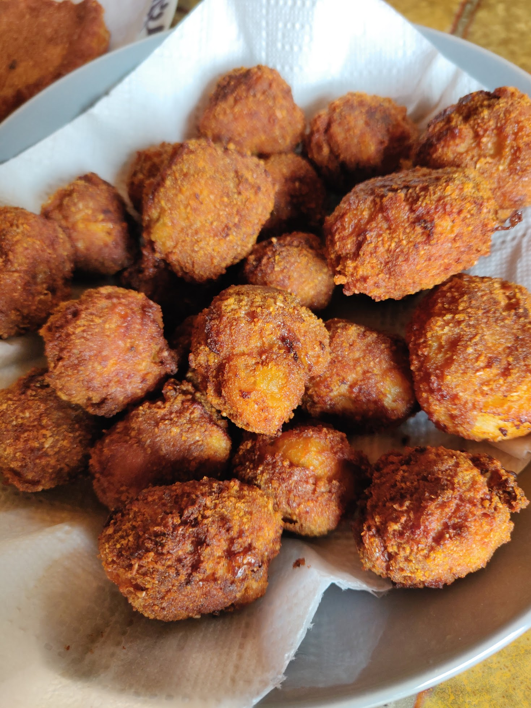

Hozzávalók:
- 500 g sertés darált hús (sovány)
- fél fej vöröshagyma
- 1 gerezd fokhagyma
- 2 db tojás (közepes, "M"-es méretű)
- 1 db zsemle (szikkadt)
- só
- feketebors (őrölt)
- 2 ek. fűszerpaprika/li>
- Víz vagy tej a zsemléhez
- zsemlemorzsa a beforgatáshoz
Elkészítés:
- A kenyeret a tejbe áztatjuk. Kb. 10 perc elteltével jól kicsavarjuk.
- Olajon megdinszteljük az apró kockára vágott vöröshagymát.
- Ha egy kicsit kihűlt, akkor hozzáadjuk a darált húshoz, rányomjuk a fokhagymát, ráütjük a tojásokat is.
- A szikkadt zsemléket vízbe - esetleg tejbe - áztatjuk jó alaposan.
- Beletesszük a beáztatott és jól kifacsart zsemléket is a darált húsba. Fűszerezzük sóval, borssal és pirospaprikával és alaposan kigyúrjuk. Ha túl lágy lenne a massza, akkor kevés zsemlemorzsát adjunk hozzá.
- Vizes kézzel golyókat formázunk belőle (én a pingpong labda nagyságúakat szeretem).
- A kész fasírtokat kevés zsemlemorzsában forgassuk meg.
- Végül nem túl forró olajban süssük ki. Kb. 15 perc alatt átsül - persze mérettől függően.
https://cookpad.com/hu/receptek/1926101-egyszeru-fasirt